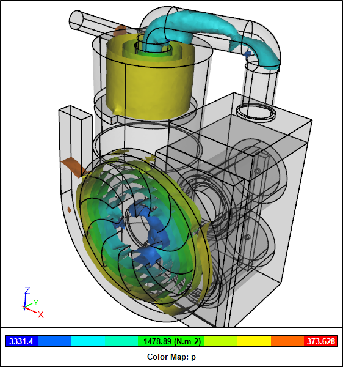
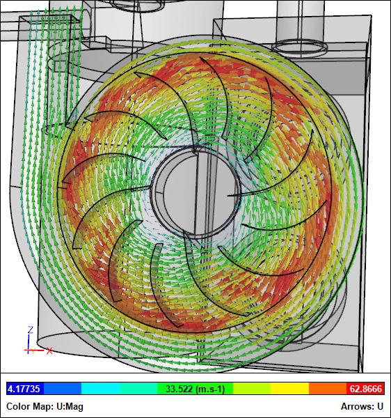
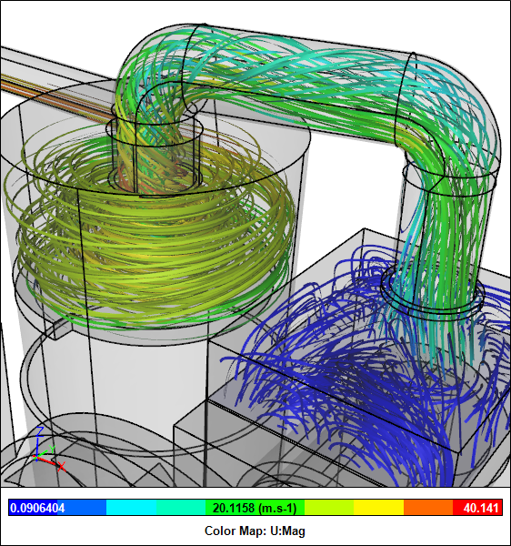

CFD For A Complete Dust Collector
Having performed Computational Fluid Dynamics (CFD) simulations for each component of Matthias Wandel's "Small Dust Collector," the time has come to assemble and test the entire system - virtually, of course. Recall that the main components of the dust collector are a cyclone, a filter assembly, and a blower.
 Dust Collector CFD Simulation
Dust Collector CFD Simulation
3D Model Construction
The fully assembled model required the repositioning of the three main components and then virtual plumbing to connect them as depicted in Matthias' SketchUp assembly model.
Small Dust Collector SketchUp Model
Small Dust Collector SketchUp Model Section
First the pipes for the complete CFD model were trimmed to the required lengths. Then the final multi-volume flow-domain was created using a combination of edge lofting to create joint faces and volume stitching.
Small Dust Collector CFD Model
Performance Test
Unlike the previous CFD simulations where we had to consider a range of volume flow rates to determine the pressure drops at each condition, this test has only one operating parameter and it is fixed according to the rotation speed of the motor at 3500 RPM. The single inlet and outlet pair are assumed to be open to atmosphere, equivalent to a gauge pressure of zero.
Residuals Monitor
Summary
Recall that from our individual cyclone and filter assembly CFD simulations we found that their combined demand curves (pressure drop vs volume flow rate) intersected the blower's fan curve at a volume flow rate of 0.063 m3/s. The results for the fully assembled system indicate a volume flow rate of 0.08 m3/s.
Volume Flow Rate Monitor
Notice that there is some discrepancy in flow rate between the two CFD results for the discrete components and the fully assembled dust collector. Given that the cyclone contributes to the majority of the pressure drop through the dust collector, it is the obvious place to look for differences. It appears that the outlet location for the lone cyclone CFD analysis intersected a vortex core, whereas the cyclone exhaust piping in the assembly CFD analysis allows the vortex to dissipate and the pressure to recover. This results in a lower overall pressure drop prior to entering the filters and therefore a higher overall flow rate for the assembly.
Flow Visualization
Assembly
Pressure Iso-SurfacesDust Collector CFD Simulation
Clipped Pressure Iso-SurfacesDust Collector CFD Simulation
Velocity Iso-SurfacesDust Collector CFD Simulation
Clipped Velocity Iso-SurfacesDust Collector CFD Simulation
Components
Velocity Vectors For BlowerDust Collector CFD Simulation
Streamlines For CycloneDust Collector CFD Simulation
Pressure Iso-Surfaces For FiltersDust Collector CFD Simulation
Velocity Iso-Surfaces For FiltersDust Collector CFD Simulation
Streamlines For FiltersDust Collector CFD Simulation
Notes
The assembled geometry was created in Caedium Professional. The CFD simulation was performed using the incompressible, steady-state RANS solver with porous media, a Moving Reference Frame (MRF), and the k-omega SST turbulence model.
Feedback
Questions? Ideas? Problems?

Recent blog posts
- CFD Simulates Distant Past
- Background on the Caedium v6.0 Release
- Long-Necked Dinosaurs Succumb To CFD
- CFD Provides Insight Into Mystery Fossils
- Wind Turbine Design According to Insects
- Runners Discover Drafting
- Wind Tunnel and CFD Reveal Best Cycling Tuck
- Active Aerodynamics on the Lamborghini Huracán Performante
- Fluidic Logic
- Stonehenge Vortex Revealed as April Fools' Day Distortion Field
 Get our Blog feed
Get our Blog feed
Comments
Good Analysis
Good work, In this model you have cyclone->filter-> impeller this makes theoretical sense as the air going through the impeller is clean, but as other makers often may put impeller->cyclone->filter or cyclone->impeller->filter. I wonder if there is any order that is better optimized for flow.
Improvement Idee
I'm currently working on an idea for my dust collector in which i put the impeller on top of the cyclone.
The cyclone creates spinning air an the impeller has to do the same. so why not use the sinning air of the cyclone to help the impeller.
In this idea i wanted a minimum of sharp corners that restrict the airflow
the Cyclone I have in mind is a bit different from the normal ones. On the bottom is a cone with a 4 cm gap at the sides the wall with the inlet is tilted 20 degrees inward (bottom wide top narrow) and after that it has a 45 degree angle toward the intake of the impeller.
The impeller has two outlets but not at 180 degrees from each other but 187.5 and 172.5 degree this combined with a 12 blade impeller, makes that the outlets have there pressure alternating instead of simultaneously. This will cancel out a part of the noise.
after this comes 2 halve cartridge filters one for each outlet
if there are questions please ask. I got some drawings on paper.
The impeller is protected by
The impeller is protected by being after the filter. A nail could bounce around in the cyclone and trigger a bad wreck of the impeller. Maybe ad an energy recovering diffusor at the cyclone and then stacking the two filters to create a long straight run of the air before the blower inlet? Fans are sensitive to turbulence and flow misalignment at their inlets.